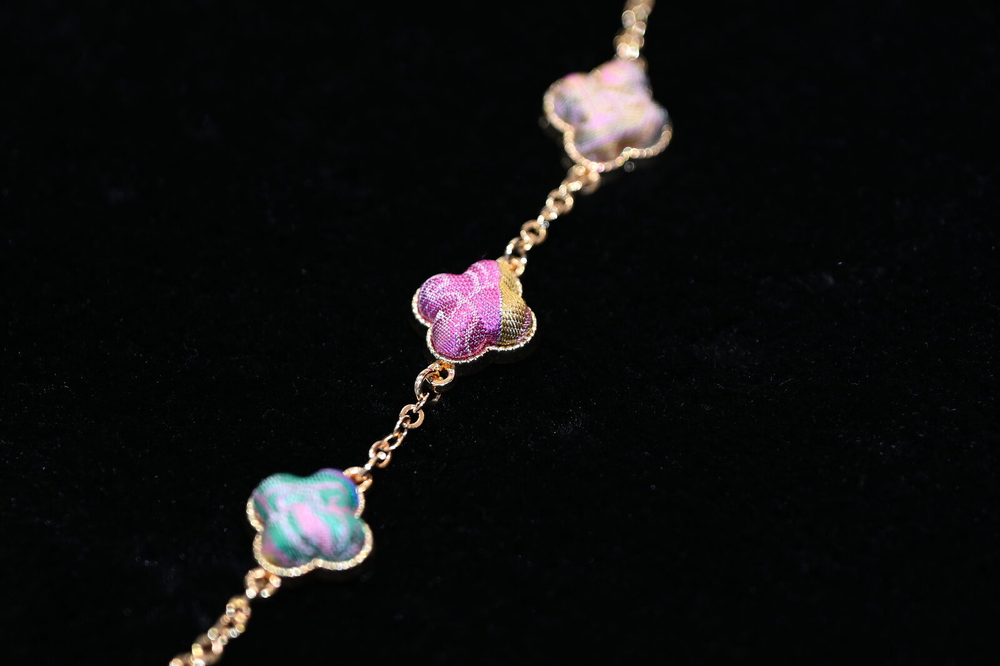
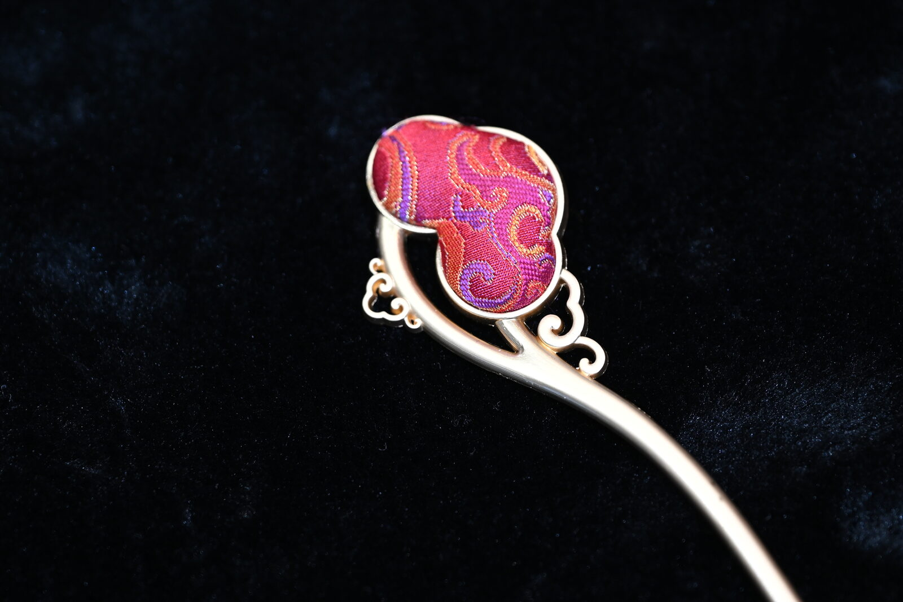

The Brocade
That Never Reached Vienna
On Habsburg chinoiserie, the imperial looms of Nanjing, and a silk the Chinese throne would not let leave the realm.
Walk through Schönbrunn today and you arrive, half by surprise, in a room that is not Austrian. The wallpapers are blue and yellow; medallions show small figures cultivating mulberry, reeling cocoons, throwing the shuttle. This is the Blue Chinese Salon, the threshold of the apartments Maria Theresa shared with her husband Franz Stephan. The wallpaper was made in China, to European taste, for export — a hybrid object that records, more candidly than any document, what the Vienna of the 1760s wanted to see when it looked east.
The two Chinese Cabinets next door — Round and Oval — were furnished by the empress between 1746 and 1760 with lacquer panels, porcelain, and silks. The Vieux-Laque Room, after her husband's death, was lined with black lacquer brought from Beijing and turned into a memorial chamber. Across the palace, a century later, her descendant Elisabeth — known to history as Sisi — would hang her own private apartments with silk in her favoured lilac. The taste persists; the materials change; the eastward gaze does not.

What did not arrive
The eighteenth-century European court collected what could be carried by ship. Lacquer travelled. Porcelain travelled — entire dinner services, entire wallpapers. Silk, abundantly, travelled: bolts of damask and satin, painted silks for screens, gauzes for summer dress. The chinoiserie cabinets at Schönbrunn, the Vieux-Laque Room, the Porcelain Room of Maria Theresa's study — each is, in part, a record of what the Canton trade was permitted to ship.
Yúnjǐn was not permitted. The cloud brocade of Nanjing — so called for its iridescent, cloud-like figured ground — had since the Yuan dynasty been the product of imperial workshops, woven for the throne, for the imperial family, and for the highest ranks of court. Under the Qing it was placed under the direct supervision of the Jiāngníng Imperial Weaving Bureau (江宁织造署), an institution famous in Chinese letters as the household post once held by the family of the novelist Cao Xueqin. To leave its bolts to private merchants — let alone to foreign buyers — would have been a sumptuary breach.
There is a phrase in the trade: cùn jǐn cùn jīn — an inch of brocade is an inch of gold. The arithmetic is literal. Two weavers, working in concert at the huā lóu draw-loom, produce roughly five centimetres in a day.
The cabinets of Vienna therefore record a beautiful incompletion. They show what Maria Theresa loved, but not the totality of what existed to be loved. The brocade that the Qianlong Emperor wore on his throne — the dragon robes, the silks of the inner court — was on no inventory the Canton agents could submit. It remained in Nanjing.
The looms of Nanjing
Nanjing's silk industry is older than the brocade itself. Sericulture in the lower Yangzi reaches back to the Liu Song dynasty; an imperial weaving office is recorded at Jiankang — Nanjing's earlier name — as early as 417 CE, the conventional date given for the founding of the tradition. By the Ming, the workshops served the new capital directly. By the Qing, the Jiāngníng Imperial Weaving Bureau was one of three southern bureaux (alongside Suzhou and Hangzhou) reporting to the Imperial Household Department in Beijing.
The technique that defines yúnjǐn is twofold: tiǎohuā jié běn, the encoding of a design as a knotted pattern-script that hangs above the loom, and wā huā pán zhī, a discontinuous weft technique that permits the weaver to introduce coloured silk, gold thread, even peacock-feather barbs, only at the points where they will appear in the figure. The result is a fabric whose reverse is as illegible as the front is luminous — a textile that, as the saying goes, looks woven of clouds.

A taste that never quite found its object
What the Habsburg court loved, when it loved East Asia, was not a single textile but a constellation of effects: the gleam of lacquer, the cool of porcelain, the dense ornament of figured silk. The cabinets at Schönbrunn show this clearly. The Round Cabinet is dominated by Japanese maki-e lacquer panels painted in gold dust; the Oval, by Chinese coromandel work and bright polychrome lacquers. Silks were applied as wall coverings, as upholstery, sometimes as panels in their own right.
To the European eye, all of this was Cathay — a generalised East. The distinctions that mattered intensely in China itself — Suzhou kèsī tapestry weave versus Nanjing brocade versus Sichuan shǔjǐn — were, for the most part, invisible. A connoisseurship existed (one need only read the letters of Augustus the Strong's porcelain agents), but it concerned what could be procured. The textiles of the inner court could not be procured, and so they did not enter European connoisseurship.
Our position, here, is that this absence remains worth attending to. Habsburg chinoiserie is one of the most magnificent records of European longing for the East; it would be a finer record if it could be completed. The contemporary maker stands now where the eighteenth-century merchant could not — and SEIDENHERKUNFT exists, in part, to test whether the conversation is still open.
From imperial gift to private hand
The status of yúnjǐn changed with the fall of the Qing. The Jiāngníng bureau was dissolved in 1912; the looms scattered; the technique came perilously close to vanishing during the middle decades of the twentieth century. In 1957 the Nanjing Yúnjǐn Research Institute was established — as the country's only specialised yúnjǐn institution — to recover the full huā lóu draw-loom method from surviving master weavers and from the textiles preserved in the Palace Museum, the Nanjing Museum, and the Ming imperial tombs at Dingling. The work of recovery was meticulous and slow. The Institute has since reproduced silk artefacts on commission for institutions including the Palace Museum in Beijing and the Museum of Fine Arts in Boston.
In 2009 UNESCO inscribed Nanjing yúnjǐn weaving on the Representative List of the Intangible Cultural Heritage of Humanity. The Institute, together with the Nanjing Yúnjǐn Museum (with which it shares a single team), is the formal custodian of the inscription. Fewer than a hundred master weavers now hold the technique at its full level. The brocade is no longer imperial property; it is, however, far rarer than it was at the height of the Qing — and it can, for the first time in its history, be commissioned.
A note on what we offer
The objects we produce are not robes; we do not pretend to restore an imperial wardrobe. They are commissioned articles — fans, bags, scarves, hairpins, brooches, framed brocade panels, presentation suites — each set with a panel of authentic Nanjing brocade woven on the Research Institute's premises. Each commission carries a card of provenance and is registered in the house ledger. The brocade ages slowly and well; with reasonable care, the silk will outlive its recipient.
We think of these objects as visiting cards from a tradition that, for most of its history, did not call. They arrive late. They arrive on commission. They are, finally, available.